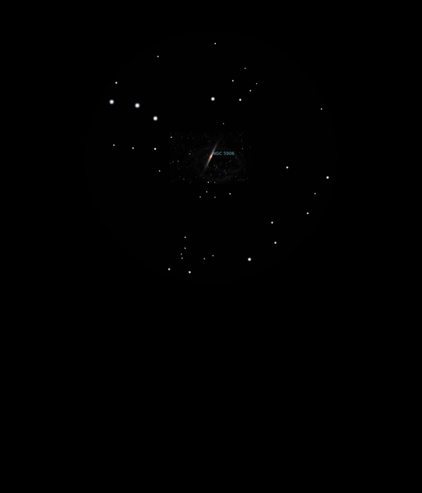

NGC 5907
Spiral Galaxy in Draco
NGC 5907 and NGC5906
Mag 10.4
The Knife Edge or Splinter Galaxy
22/08/16
The very faintest sliver of this Mag 10.4 Galaxy in 12mm but
easy to locate just below a neat asterism of stars of Mags
7.5, 7.9 and 8.3 with HIP 74458 in the middle at Mag 7.5 and
HIP 74377 to the north at Mag 7.9